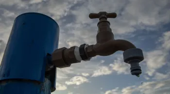
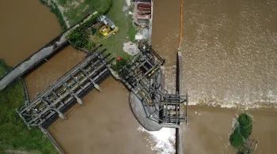

Veja as principais Notícias:
Nenhum resultado

Senado aprova projeto que cria tarifa social de água e esgoto para pessoas de baixa renda
Clique para ver mais sobre

Senado pode votar tarifa social de água e esgoto para baixa renda nesta quarta (8)
Clique para ver mais sobre
RJ: força-tarefa tenta descobrir de onde veio produto que poluiu água
Clique para ver mais sobre

Captação é retomada após poluente contaminar água que abastece cidades no Rio
Clique para ver mais sobre
Dia mundial da água: Cerrado, conhecido como berço das águas, já teve 53% de área desmatada
Clique para ver mais sobre
Vazamento que contaminou água da Cedae é achado próximo a oleoduto; imagem aérea mostra mancha em rio
Clique para ver mais sobre
Nenhuma notícia encontrada com esse filtro!
Clique para ver mais sobre